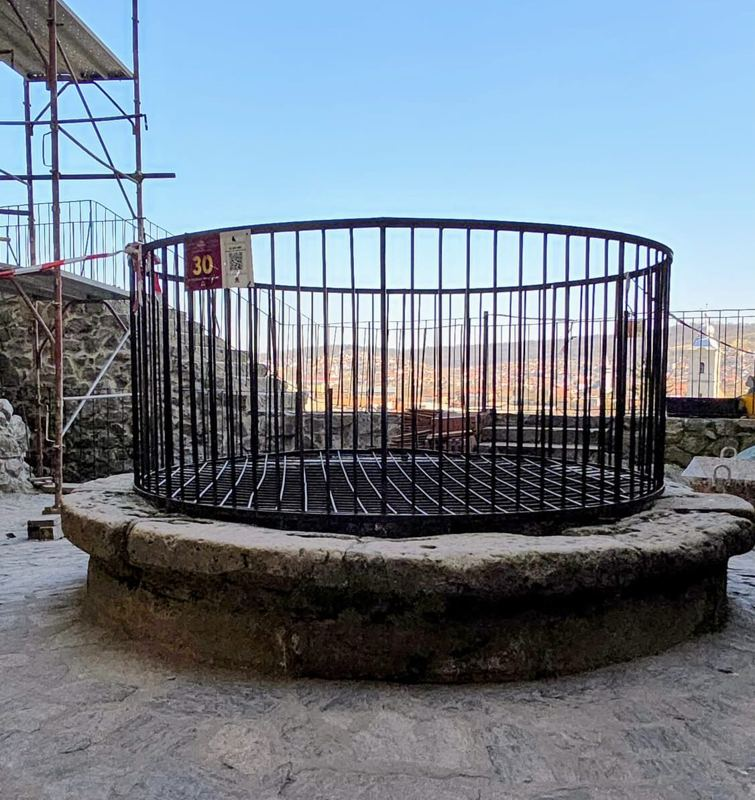
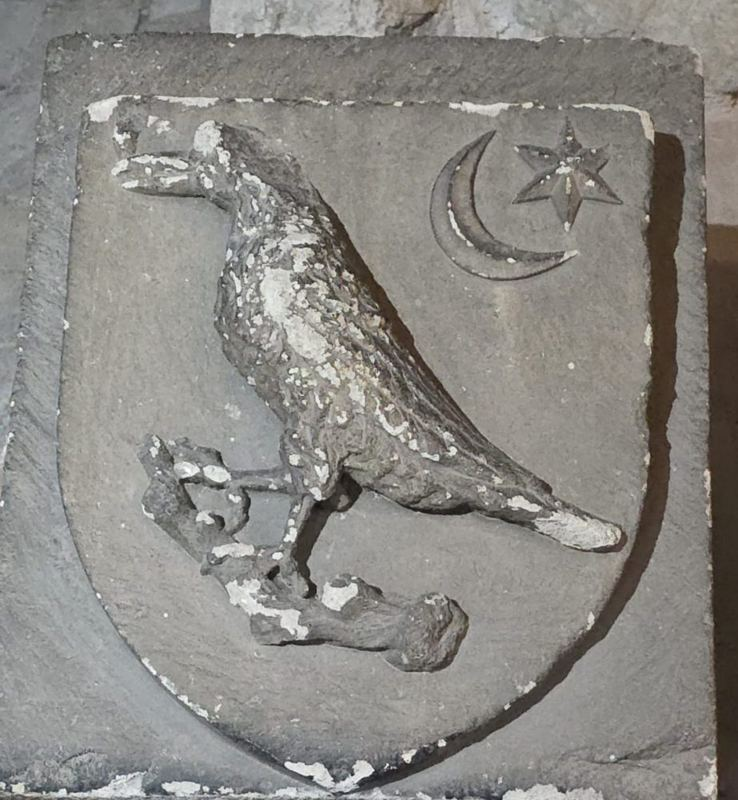
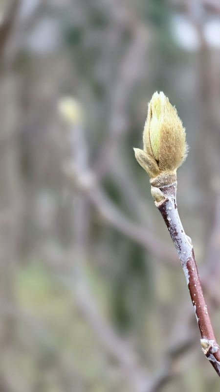
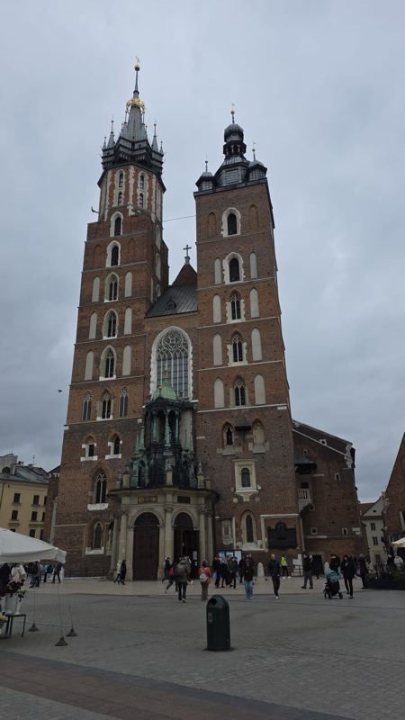
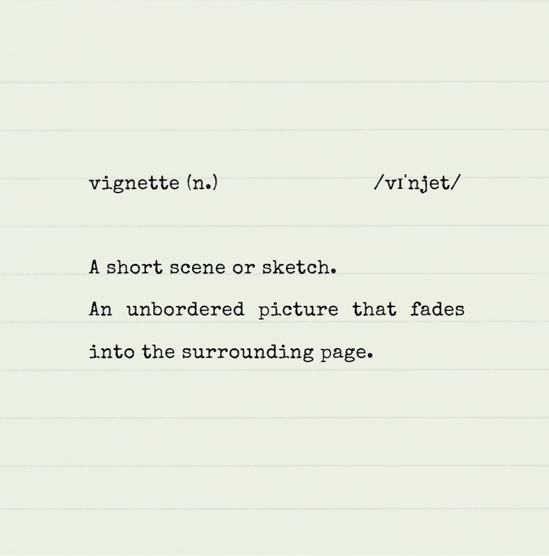

Stories of Romania: The Well of the Three Prisoners A retold legend of three Ottoman prisoners promised freedom by John Hunyadi if they dug a well through solid rock. Whether the story is true is left open, but someone did dig that well.
Folktales, retold where I heard them
Legends from the places I visited, told the way they were told to me.
6 posts

Stories of Romania: The Raven of Corvin Castle A folktale about King Sigismund, a village woman, a ring, and a raven, explaining John Hunyadi's origins and his raven coat of arms. It ends where Hunyadi's own story begins.
Stories of Romania: Baba Dochia Overlapping versions of the Baba Dochia and Dragobete legends tied to the arrival of spring. It closes with a list of Romanian idioms and their literal translations.
Stories of Krakow: The Dragon, The Bugler, The Enchanted Knights Three Krakow legends: the Wawel dragon, the Saint Mary's bugler whose song breaks off, and knights turned into the pigeons of the market square. Told in the "bajka, nie bajka" (maybe true, maybe not) style.
Stories of Romania: Vignettes Short portraits of people from the semester: the librarian who was my first friend, a teacher, a taxi driver, coffee-shop regulars, and "Luca." I circled the word "earnestness" to come back to later.